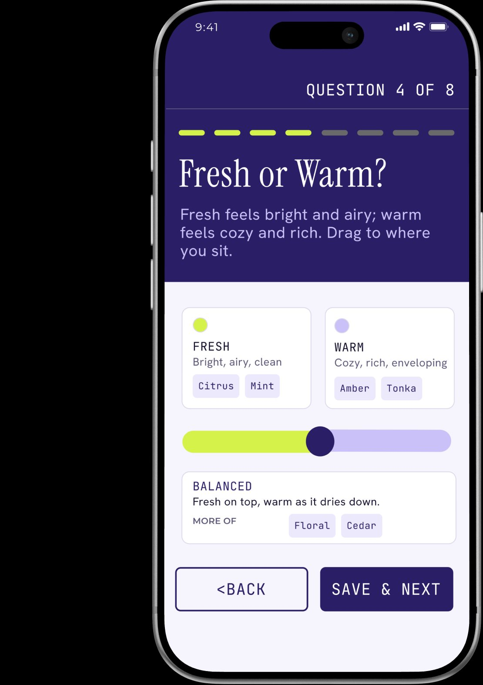
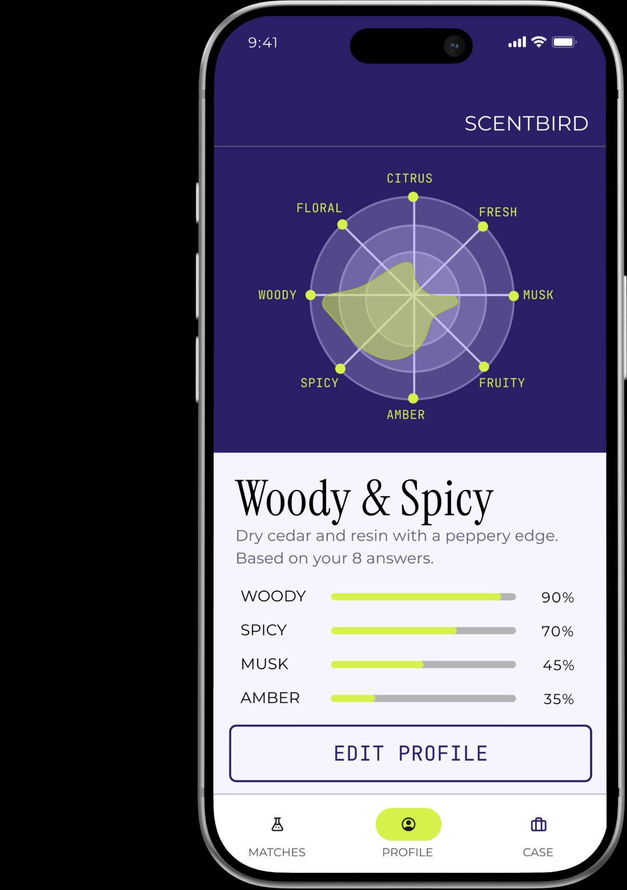
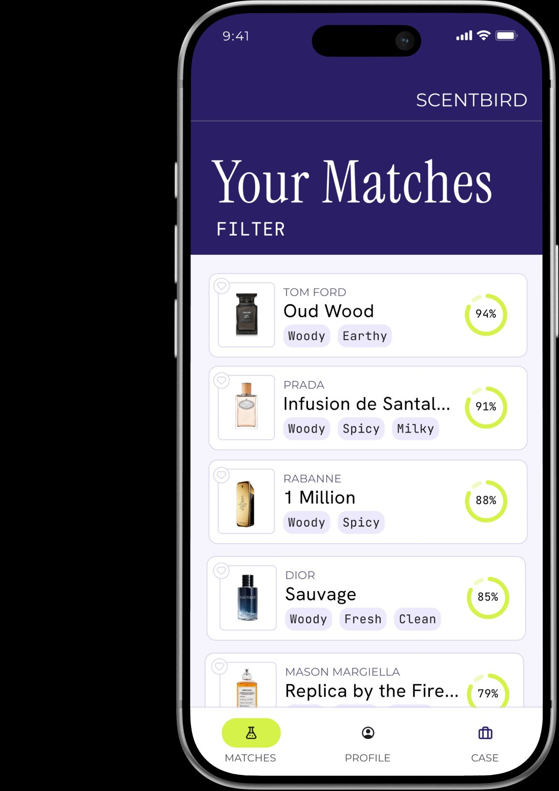
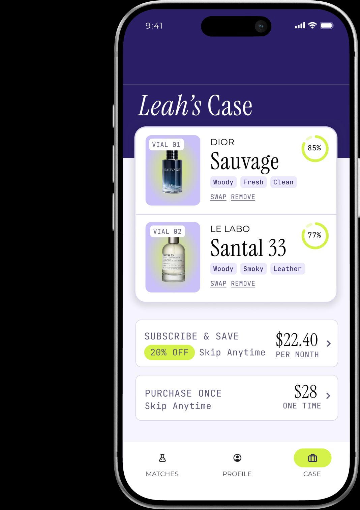
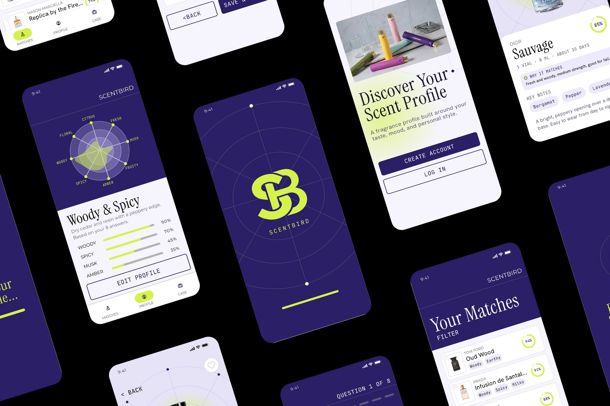
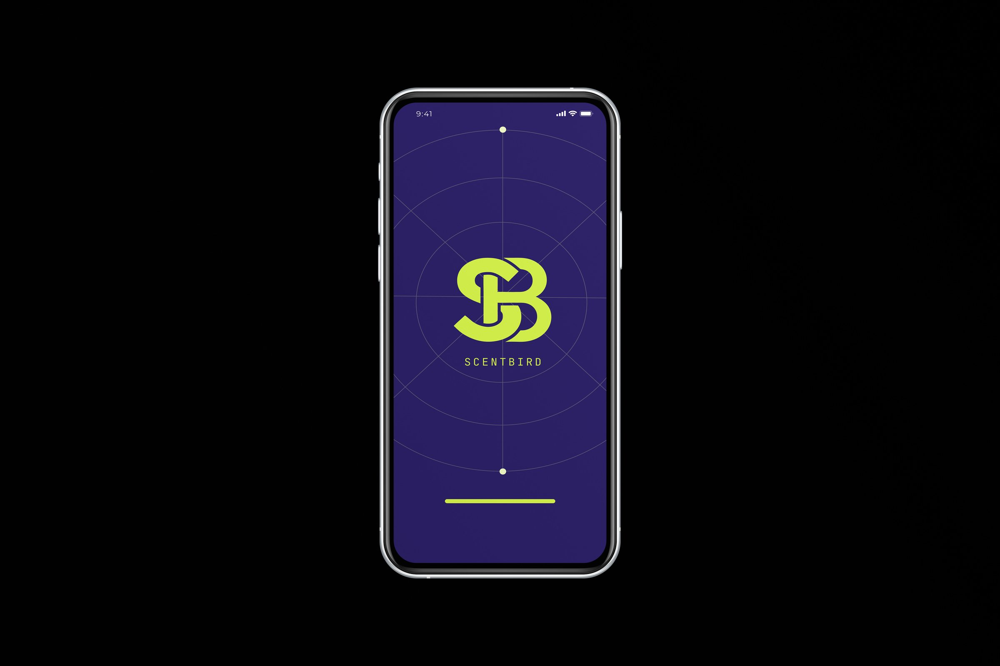

Scentbird
Making the invisible tangible.
- Role
- UX/UI Designer
- Context
- Academic project; mobile app redesign for a fragrance subscription service
- Tools
- Figma
- Deliverables
- Mobile app redesign, user flows, fragrance discovery screens, subscription experience, checkout screens
Scentbird is a fragrance discovery and subscription service that allows users to explore perfumes, receive personalized recommendations, and build a monthly fragrance collection.
Although the concept offers an engaging approach to fragrance discovery, the existing app experience leaves opportunities to make personalization, product exploration, and subscription management more intuitive.
I selected Scentbird for a mobile app redesign because of the potential of its concept and the opportunity to strengthen how users discover and experience fragrance through a digital interface.
Fragrance is personal, but on a screen, it is invisible.
Users rely on descriptions, fragrance notes, and recommendations to imagine how a scent might smell. Without enough context, navigating a large fragrance catalog can feel overwhelming.
My evaluation identified three primary areas of friction:
-
01
Discovery feels like a catalog
A large fragrance library makes it difficult to narrow down options.
-
02
Recommendations lack context
Suggested fragrances do not clearly communicate why they match individual preferences.
-
03
Subscription management lacks clarity
Billing, delivery, and plan management are difficult to navigate.
The opportunity was to make fragrance discovery more personal while creating a clearer path from initial exploration to subscription.
I evaluated the existing Scentbird app, conducted competitor research, and analyzed App Store reviews, Google Play reviews, and fragrance-community discussions.
My research focused on three questions:
- How easily can users discover and evaluate fragrances?
- How clearly does the app communicate personalized recommendations?
- How easily can users understand and manage their subscription?

Three recurring themes emerged
-
01
Difficulty organizing and revisiting fragrances
-
02
A lack of transparency behind recommendations
-
03
Confusion surrounding subscription management
These findings informed a redesign centered on guided discovery, meaningful personalization, and greater subscription transparency.
I developed a primary user persona, empathy map, and customer journey to better understand the motivations and frustrations behind fragrance shopping.
Maya represents a curious fragrance shopper interested in finding a signature scent and exploring unfamiliar fragrances without feeling overwhelmed by technical terminology or endless options.
Mapping her experience revealed opportunities to support users throughout the discovery process, from initial exploration and evaluation to selecting a fragrance and committing to a subscription.
The redesign follows four central goals
-
Goal 01
Personalize discovery
Introduce a guided scent quiz that translates individual preferences into a personalized fragrance profile.
-
Goal 02
Create a sensory experience
Make an invisible product more tangible through visualizations, descriptive language, and scent profiling.
-
Goal 03
Improve product exploration
Provide clearer fragrance notes, match scores, and explanations behind recommendations.
-
Goal 04
Simplify subscriptions
Make pricing, delivery schedules, and subscription management easier to understand.
I reorganized the experience around six primary destinations: Discover, Search, Fragrance, My Scents, Profile, and Subscription.
The revised information architecture establishes clearer pathways for browsing collections, filtering fragrances, revisiting saved scents, managing preferences, and accessing account information.
I then mapped the primary user journey, from opening the app and completing the scent quiz to exploring personalized matches, selecting fragrances, building a monthly case, and completing checkout.

The scent quiz serves as the foundation of the redesigned experience.
Eight guided questions explore fragrance preferences through approachable prompts about scent notes, moods, and personal tastes. Rather than relying exclusively on technical fragrance terminology, the questions make preference-building feel more conversational and engaging.
The resulting scent profile translates user responses into a signature fragrance family, preferred notes, and ranked recommendations.
Users can review and edit their preferences, allowing them to refine their profile and better understand how their selections influence fragrance matches.




I developed a new visual direction using deep purple, electric lime, and soft lavender, supported by editorial typography and geometric scent-inspired graphics.
The visual system creates a distinctive identity for the app while using color, contrast, and recurring graphic motifs to establish consistency across the redesigned experience.
The interface connects onboarding, personalized results, fragrance exploration, and subscription checkout through a cohesive visual language.


The redesigned primary user journey brings fragrance discovery, personalization, and subscription selection into a more connected mobile experience.
By making fragrance preferences easier to express and recommendations easier to understand, the redesign reframes the experience from browsing a catalog to discovering scents that feel personal.